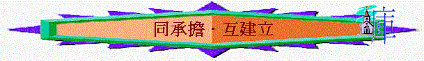

「我們堅固的人應該擔代不堅固人的軟弱，不求自己的喜悅。我們各人務要叫鄰舍喜悅，使他得益處，建立德行。因為基督也不求自己的喜悅，如經上所記：「辱罵你人的辱罵都落在我身上。」從前所寫的聖經都是為教訓我們寫的，叫我們因聖經所生的忍耐和安慰可以得著盼望。但願賜忍耐安慰的神叫你們彼此同心，效法基督耶穌，一心一口榮耀神我們主耶穌基督的父！所以，你們要彼此接納，如同基督接納你們一樣，使榮耀歸與神。」羅 15:1-7
聖經題及「一心一口榮耀神」，相信我們也體會到神很多恩典，曾幾何時，我們都是軟弱的人(可能現在也是)，一些風浪打下來時，我們就承受不了，擔當不起，但感謝神，很多次覺得不明白、不能接受、灰心、失意、自己也不能接受自己的時刻，神就用不同的方法，萬事的效力，重新鼓勵我們，堅固我們，使我們可以仍不離開主，仍可活在神的愛中，所以我們也願意一心一口讚美神、榮耀神、述說祂的恩；保羅題到當我們要一心一意榮耀神時，不要忘記要「彼此同心、效法基督」，效法基督甚麼事情？
一．要承擔
當我們在軟弱中被神堅固後，我們嘗試一同學習，對團契、對團友、對教會多一份承擔，耶穌是堅固的人，祂來到世間要承擔人的重擔，我們也要效法，看到弟兄姊妹軟弱的時候，即使自己多忙碌，嘗試成為對方的有聲無聲的支持與幫助，看到團契有不足時，不要想抽身、想不理、想逃避，嘗試與職員與導師一同承擔，記得有一次，有一位肢體他看到教會發生問題時，他的反應是感到十分難過，但他沒有逃避問題，他找了我與他一同做了一件事──就是一同承擔這問題，一同在神面前跪下祈禱，他為神的家而流淚，我們也可以，看到教會有缺口時，一同祈禱，大家也不要灰心，主比我們看得更清楚，祂與教會同工的，祂仍沒抽身不理教會的，多一些為教會----基督的身體祈禱(切莫恨惡主的身體)，嘗試放低血氣，向傳道人表達，一同積極，不中撒但詭計，共同承擔！
二．要討悅
主耶穌來到世間，祂也有自己的願望、喜悅的事，正如我們也有自己的意思，自己的選擇「我喜歡這樣」「我不喜歡這樣」「我覺得這方式能造就我」，耶穌也有祂的喜好，但祂卻不求自己的意思，嘗試討悅神，也為人設想，甘心行上十架的路；有一次，有一肢體幫教會買了一器皿，他也為自己買了同一件，但後來發現其中一件有破損，他心想究竟將那件給教會，那件歸自己，按自己的喜悅，是要將好的留己，但後來他討主喜悅，結果將最好的給教會，我們又如何呢？人生有很多選擇與喜愛，我們已不像小朋友常說「我喜歡」、「我不喜歡」，嘗試多討悅主，也為別人設想，我的言行會否叫身邊肢體跌倒，跘倒人的事一概不作，我如何可以討悅人，能使人快樂，不憂愁呢？大家一同彼此效法主，嘗試互相討悅，不令任何一個肢體擔心，以別人的喜樂成為我們的喜樂，不是常想「我想怎樣」「我要求人怎樣」，而多為肢體、為團契、為教會整體、為主而設想。
三．要建立
主來到世間，不是受人的服事，及是服事人，要建立人，人始終會有他的夢想：「我期望別人如何造就我、建立我」但我們要成長的，不是常停留在自己的需要，自己的問題中，我們要開始想想如何在生活、在生命、在屬靈上建立對方，如何令對方不是單有問題找我傾訴，而是帶對方積極仰望尋找神，不是單是期望別人可餵養我，我也要學習如何建立別人，也要學習為肢體為教會祈禱，記得有一次，有一位肢體放暑假，她回到教會問傳道人，教會有否義工可以作，她是初信者，她很想建立及服事教會，我們又如何呢？有否建立教會，服事他人的心？求神使用他們，能彼此建立，造就對方，也使用我，求主在忙碌生活中，仍用我！可以在團契，在教會中成為建立者(不是拆毀者)！